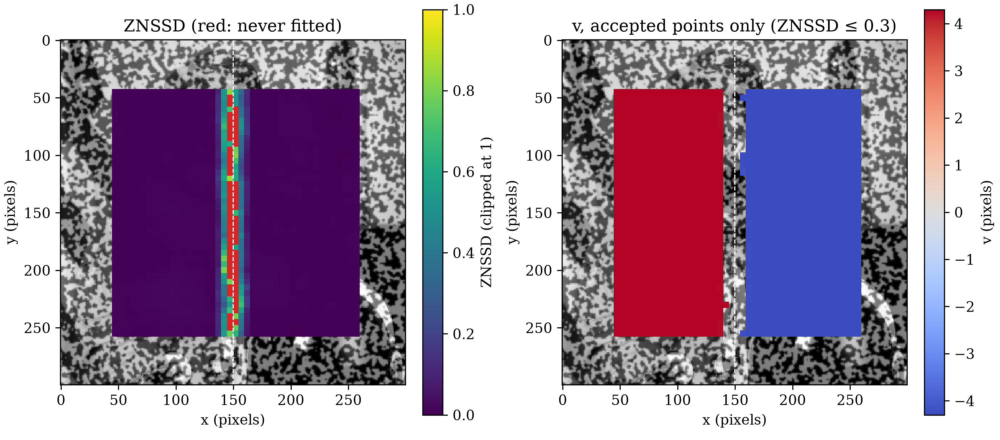

Detection
Synthetic Dislocation and Experimental Dislocation both found the same signature. A kernel that straddles a crack shows two comparably tall correlation peaks, not one. On both pages, a person placed the kernel on the crack first. This page finds the crack without that step.
It tracks a full grid of points with
grid.locate_warp_propagated
from Seed Propagation, then maps each point's
ZNSSD. An affine warp can't represent a jump in displacement. No single
warp matches both sides of a straddling kernel, so its ZNSSD can rise
above the znssd_limit gate of 0.3.
A Synthetic Crack
The test reuses Synthetic Dislocation's 300x300 image, rosta speckle
combined with the astronaut. crack_dislocation splits it between
pixel columns 149 and 150. The left half moves down, and the right half
moves up. The grid holds 1849 points, 43 by 43 at 5 px spacing. It uses
Seed Propagation's margins, kernel_margin=13 and search_margin=25.
Each kernel is 27 px wide, so a point straddles the crack when its x
lies between 137 and 162.
Two cases test the method. The on-grid case uses Synthetic
Dislocation's 4 px offset and puts a grid column at x = 150. The
off-grid case uses a 4.3 px offset and shifts the grid 2 px right, so
no column lines up with the crack. A subpixel offset forces
interpolation, so ZNSSD away from the crack no longer comes out exactly
zero. As a baseline, locate_warp from Kernel
Warping tracks the same grid without a gate:
| on-grid | off-grid | |
|---|---|---|
| Crack offset | 4.0 px | 4.3 px |
| Points away from the crack | 1634 | 1591 |
| ... largest ZNSSD | 0.000 | 0.020 |
| ... largest error | 0.000 px | 0.029 px |
| Points straddling the crack | 215 | 258 |
| ... rejected by the gate | 162 | 165 |
| ... of those, never fitted | 53 | 63 |
| ... accepted | 53 | 93 |
| ... largest error when accepted | 0.273 px | 0.300 px |
| Accepted points more than 1 px off | 0 | 0 |
locate_warp points more than 1 px off | 48 | 44 |
| Column with the highest median ZNSSD | 150 (0.5 px) | 147 (2.5 px) |
Away from the crack, every point passes the gate. The largest ZNSSD there is 0.020, and the largest error is 0.029 px. The gate rejects 162 of the 215 straddling points on-grid, and 165 of 258 off-grid.
The gate keeps the crack from spreading a bad fit. No accepted point
lands more than 1 px from its true position. Without the gate,
locate_warp puts 48 points more than 1 px off on-grid, and 44
off-grid. A point that no accepted fit can reach gets its own start
search, as Seed Propagation describes. No fit has to cross the crack.
Accepted straddling points pay in accuracy. They land up to 0.300 px off, 10 times the 0.029 px largest error away from the crack. An affine warp has no term for the jump, so it settles on a compromise between the two sides.
The ZNSSD map finds the crack without a line chosen in advance. Figure 11.3-1 shows the off-grid case. The rejected points form one vertical band. The column with the highest median ZNSSD sits at x = 147, 2.5 px from the crack at x = 149.5. On-grid, it sits at x = 150, 0.5 px away. The off-grid crack sits midway between columns 147 and 152, 2.5 px from each. No column could land closer.

A Real Crack
The real test uses Experimental Dislocation's 512x512 micrograph pair. No ground truth exists. The crack can't be seen in the reference image. It shows as a diagonal band in the current image. Points also move far: u runs from 18 to 37 px and v from 9 to 13 px. Seed Propagation's 25 px search margin can't cover a 37 px motion. This test pairs a 27 px kernel with a 50 px search margin, and a 51 px kernel with Experimental Dislocation's 65 px. Both grids use 5 px spacing.
Two checks stand in for ground truth. A line fit tests whether the rejected points form one straight band. Each row's band center is the mean x of its rejected points, ignoring any more than 40 px from the row's median. A neighbor check compares each accepted point with the accepted points within 10 px on the same side of that line. A point fails when its u or v differs from their median by more than 1 px. The second table measures displacement across a fainter streak, described below:
kernel_margin=13 | kernel_margin=25 | |
|---|---|---|
| Kernel width | 27 px | 51 px |
| Search margin | 50 px | 65 px |
| Points tracked | 6561 | 5625 |
| Accepted / rejected / never fitted | 5981 / 278 / 302 | 4712 / 249 / 664 |
| Median ZNSSD of fitted points | 0.049 | 0.063 |
| Rejected near the band / farther away | 573 / 7 | 913 / 0 |
| Line fitted to the band | x = 0.596 y + 104.6 | x = 0.594 y + 105.4 |
| Band angle from vertical | 30.8° | 30.7° |
| RMS scatter of band centers about the line | 1.83 px | 1.75 px |
| Median band width | 35 px | 60 px |
| Accepted points more than 1 px from same-side neighbors (largest) | 0 of 5981 (0.51 px) | 0 of 4712 (0.27 px) |
| Lower-left side, median u / v | 19.94 / 10.65 px | 20.10 / 10.74 px |
| Upper-right side, median u / v | 32.33 / 11.51 px | 32.32 / 11.53 px |
| Distance from the crack line | Points | Median ZNSSD | Median u | Median v |
|---|---|---|---|---|
| -240 to -200 px | 130 | 0.046 | 18.10 px | 9.61 px |
| -200 to -185 px | 58 | 0.056 | 18.49 px | 9.97 px |
| -185 to -155 px | 121 | 0.130 | 19.02 px | 10.24 px |
| -155 to -140 px | 61 | 0.087 | 20.55 px | 11.59 px |
| -140 to -100 px | 160 | 0.048 | 20.68 px | 11.32 px |
The rejected points form one straight band. With the 27 px kernel, 573 of the 580 rejected points lie within 36 px of the fitted line. That line runs 30.8° from vertical. Across 81 rows, the band centers scatter 1.83 px RMS about it. The 51 px kernel gives a line at 30.7°, and all 913 of its rejected points lie within 60 px of it.
The kernel sets the band's width. The median width is 35 px with the 27 px kernel and 60 px with the 51 px kernel. The smaller kernel leaves 580 of 6561 points without a trusted position, 8.8%. The larger one leaves 913 of 5625, 16.2%. The smaller kernel also rejects 7 isolated points away from the band. The larger kernel rejects none.
The gate holds on real texture. No accepted point differs from its same-side neighbors by more than 1 px. The largest difference is 0.51 px with the 27 px kernel and 0.27 px with the 51 px kernel. With the 27 px kernel, the lower-left side moves a median u of 19.94 px and the upper-right side 32.33 px. The crack opens 12.39 px in u and 0.86 px in v.
Figure 11.3-2 also shows a fainter streak, parallel to the crack and 155 to 185 px to its lower left. Its median ZNSSD reaches 0.130, below the 0.3 gate, so the gate rejects no point there. The second table measures u and v across it, over a 100 px stretch along the crack near the streak's middle. From the band 185 to 200 px from the crack to the band 140 to 155 px from it, u rises 2.06 px and v rises 1.62 px. Between the other adjacent bands, u changes by at most 0.39 px and v by at most 0.36 px. The streak carries a jump in u one sixth the size of the crack's. This test can't tell a second, smaller crack from a narrow band of concentrated strain. Either way, the 0.3 gate misses it.
![four panels of the real micrograph pair in a 2 by 2 grid: top left, the current image with a bright diagonal crack from upper left to lower right; top right, each grid point's ZNSSD as a colored square over the reference image, dark purple except a diagonal band of red and yellow squares along the crack, a dashed white fitted line through it, and a faint lighter streak parallel to it in the lower left; bottom left, u at accepted points only, blue on the lower-left side and red on the upper-right side, with a gap along the crack; bottom right, v at accepted points only, with the same gap along the crack and a sharp step along the streak in the lower left](discontinuity_detection_experimental.png)
What This Doesn't Do
Points inside the band get no trusted displacement. The band leaves a strip 35 to 60 px wide along the crack with no data. A straight-line fit also assumes one straight crack. A curved or branching crack would need a different fit. Both tests here use one crack each, and the real test has no ground truth.
Continue to Localization.
discontinuity_detection_synthetic.py
Show the code
"""Track a full grid across the synthetic crack with
`locate_warp_propagated`, and map each point's ZNSSD. Two cases: a 4 px
offset with a grid column on the crack, and a 4.3 px offset with the
grid shifted 2 px so no column lines up with it. Prints one table and
saves the off-grid case's ZNSSD and v maps.
"""
import matplotlib.pyplot as plt
import numpy as np
import dictk
from dictk.grid import generate, locate_warp, locate_warp_propagated
from dictk.image import PixelCoordinate, combine, crack_dislocation
plt.rcParams.update({"font.family": "serif", "mathtext.fontset": "cm"})
WIDTH = HEIGHT = 300
KERNEL_MARGIN = 13
SEARCH_MARGIN = 25
GATE = 0.3
CRACK_X = 149.5
CASES = [("on-grid", 4.0, 45), ("off-grid", 4.3, 47)]
reference_image = combine(
a=dictk.rosta(width=WIDTH, height=HEIGHT, density=0.5),
b=dictk.astronaut(width=WIDTH, height=HEIGHT),
)
margins = dict(
kernel_margin_width=KERNEL_MARGIN,
kernel_margin_height=KERNEL_MARGIN,
search_margin_width=SEARCH_MARGIN,
search_margin_height=SEARCH_MARGIN,
)
rows = {}
for name, offset, origin_x in CASES:
current_image = crack_dislocation(arr=reference_image, offset=offset)
points = generate(
origin=PixelCoordinate(x=origin_x, y=45),
count_x=43,
count_y=43,
spacing_x=5,
spacing_y=5,
)
x = np.array([p.x for p in points], dtype=np.float64)
y = np.array([p.y for p in points], dtype=np.float64)
true_y = y + np.where(x < CRACK_X, offset, -offset)
found, znssds = locate_warp_propagated(
reference_image=reference_image,
current_image=current_image,
reference_points=points,
**margins,
)
rigid_seeded = locate_warp(
reference_image=reference_image,
current_image=current_image,
reference_points=points,
**margins,
)
errors = np.hypot([f.x for f in found] - x, [f.y for f in found] - true_y)
rigid_errors = np.hypot(
[f.x for f in rigid_seeded] - x, [f.y for f in rigid_seeded] - true_y
)
# A kernel spans x - 13 to x + 13, so it straddles the crack when it
# holds pixels from both columns 149 and 150.
straddling = np.abs(x - CRACK_X) < KERNEL_MARGIN + 1
accepted = znssds <= GATE
columns = np.unique(x)
medians = [np.median(znssds[x == column]) for column in columns]
peak_column = columns[np.argmax(medians)]
rows[name] = [
f"{offset} px",
f"{(~straddling).sum()}",
f"{znssds[~straddling].max():.3f}",
f"{errors[~straddling].max():.3f} px",
f"{straddling.sum()}",
f"{(straddling & ~accepted).sum()}",
f"{np.isinf(znssds).sum()}",
f"{(straddling & accepted).sum()}",
f"{errors[straddling & accepted].max():.3f} px",
f"{(accepted & ~(errors <= 1.0)).sum()}",
f"{(rigid_errors > 1.0).sum()}",
f"{peak_column:.0f} ({abs(peak_column - CRACK_X):.1f} px)",
]
if name == "off-grid":
map_case = (x, y, znssds, np.array([f.y for f in found]) - y, offset)
labels = [
"Crack offset",
"Points away from the crack",
"... largest ZNSSD",
"... largest error",
"Points straddling the crack",
"... rejected by the gate",
"... of those, never fitted",
"... accepted",
"... largest error when accepted",
"Accepted points more than 1 px off",
"`locate_warp` points more than 1 px off",
"Column with the highest median ZNSSD",
]
print("| | " + " | ".join(name for name, _, _ in CASES) + " |")
print("|---|" + "---|" * len(CASES))
for i, label in enumerate(labels):
print(f"| {label} | " + " | ".join(rows[name][i] for name, _, _ in CASES) + " |")
x, y, znssds, v, offset = map_case
accepted = znssds <= GATE
fitted = np.isfinite(znssds)
fig, (left, right) = plt.subplots(1, 2, figsize=(10.0, 4.4), constrained_layout=True)
for axis in (left, right):
axis.imshow(reference_image, cmap="gray", vmin=0, vmax=255)
axis.axvline(CRACK_X, color="white", linestyle="--", linewidth=0.8)
axis.set_xlabel("x (pixels)")
axis.set_ylabel("y (pixels)")
shown = left.scatter(
x[fitted],
y[fitted],
c=np.minimum(znssds[fitted], 1.0),
s=20,
marker="s",
linewidths=0,
cmap="viridis",
vmin=0.0,
vmax=1.0,
)
left.scatter(x[~fitted], y[~fitted], s=20, marker="s", linewidths=0, color="tab:red")
fig.colorbar(shown, ax=left, label="ZNSSD (clipped at 1)")
left.set_title("ZNSSD (red: never fitted)")
shown = right.scatter(
x[accepted],
y[accepted],
c=v[accepted],
s=20,
marker="s",
linewidths=0,
cmap="coolwarm",
vmin=-offset,
vmax=offset,
)
fig.colorbar(shown, ax=right, label="v (pixels)")
right.set_title(f"v, accepted points only (ZNSSD ≤ {GATE})")
fig.savefig("discontinuity_detection_synthetic.png", dpi=300)
discontinuity_detection_experimental.py
Show the code
"""Track a full grid across the real crack image pair with
`locate_warp_propagated`, at two kernel sizes, and map each point's
ZNSSD. Fits a line to the band of rejected points, checks each accepted
point against its neighbors on the same side, and measures the
displacement across a fainter streak parallel to the crack. Prints two
tables and saves the 27 px kernel's maps.
"""
import matplotlib.pyplot as plt
import numpy as np
from dictk.grid import generate, locate_warp_propagated
from dictk.image import PixelCoordinate, read
plt.rcParams.update({"font.family": "serif", "mathtext.fontset": "cm"})
SPACING = 5
GATE = 0.3
NEIGHBOR_REACH = 10
# The largest rigid motion is 37 px. A 50 px search margin covers it
# with room to spare; 65 px matches Experimental Dislocation's.
MARGINS = [(13, 50), (25, 65)]
# A 100 px stretch along the crack, near the middle of the streak.
ALONG_RANGE = (250, 350)
STREAK_BANDS = [(-240, -200), (-200, -185), (-185, -155), (-155, -140), (-140, -100)]
reference_image = read(path="experimental_dislocation_reference.tiff")
current_image = read(path="experimental_dislocation_current.tiff")
size = reference_image.shape[0]
rows = {}
for kernel_margin, search_margin in MARGINS:
origin = search_margin + SPACING
count = (size - 2 * origin) // SPACING + 1
points = generate(
origin=PixelCoordinate(x=origin, y=origin),
count_x=count,
count_y=count,
spacing_x=SPACING,
spacing_y=SPACING,
)
found, znssds = locate_warp_propagated(
reference_image=reference_image,
current_image=current_image,
reference_points=points,
kernel_margin_width=kernel_margin,
kernel_margin_height=kernel_margin,
search_margin_width=search_margin,
search_margin_height=search_margin,
)
x = np.array([p.x for p in points], dtype=np.float64)
y = np.array([p.y for p in points], dtype=np.float64)
u = np.array([f.x for f in found]) - x
v = np.array([f.y for f in found]) - y
accepted = znssds <= GATE
fitted = np.isfinite(znssds)
# Each row's band center is the mean x of its rejected points, after
# dropping any more than 40 px from the row's median.
centers, widths = [], []
for row in np.unique(y):
xs = x[(y == row) & ~accepted]
if len(xs) >= 2:
xs = xs[np.abs(xs - np.median(xs)) < 40]
centers.append((row, xs.mean()))
widths.append(xs.max() - xs.min() + SPACING)
band_y, band_x = np.array(centers).T
slope, intercept = np.polyfit(band_y, band_x, 1)
scatter = np.std(band_x - (slope * band_y + intercept))
cosine = np.cos(np.arctan(slope))
across = (x - (slope * y + intercept)) * cosine
along = (y + slope * (x - intercept)) * cosine
near = np.abs(across) <= 2 * kernel_margin + 10
side = np.sign(across)
deviations = []
for i in np.flatnonzero(accepted):
neighbors = (
accepted
& (side == side[i])
& (np.abs(x - x[i]) <= NEIGHBOR_REACH)
& (np.abs(y - y[i]) <= NEIGHBOR_REACH)
)
neighbors[i] = False
if neighbors.sum() >= 3:
deviations.append(
max(
abs(u[i] - np.median(u[neighbors])),
abs(v[i] - np.median(v[neighbors])),
)
)
deviations = np.array(deviations)
lower, upper = accepted & (side < 0), accepted & (side > 0)
rows[kernel_margin] = [
f"{2 * kernel_margin + 1} px",
f"{search_margin} px",
f"{len(points)}",
f"{accepted.sum()} / {(fitted & ~accepted).sum()} / {(~fitted).sum()}",
f"{np.median(znssds[fitted]):.3f}",
f"{(~accepted & near).sum()} / {(~accepted & ~near).sum()}",
f"x = {slope:.3f} y + {intercept:.1f}",
f"{np.degrees(np.arctan(slope)):.1f}°",
f"{scatter:.2f} px",
f"{np.median(widths):.0f} px",
f"{(deviations > 1.0).sum()} of {accepted.sum()} ({deviations.max():.2f} px)",
f"{np.median(u[lower]):.2f} / {np.median(v[lower]):.2f} px",
f"{np.median(u[upper]):.2f} / {np.median(v[upper]):.2f} px",
]
if kernel_margin == 13:
map_case = (x, y, znssds, u, v, slope, intercept)
streak = []
for low, high in STREAK_BANDS:
band = (
accepted
& (across >= low)
& (across < high)
& (along > ALONG_RANGE[0])
& (along < ALONG_RANGE[1])
)
streak.append(
f"| {low} to {high} px | {band.sum()} | {np.median(znssds[band]):.3f} "
f"| {np.median(u[band]):.2f} px | {np.median(v[band]):.2f} px |"
)
labels = [
"Kernel width",
"Search margin",
"Points tracked",
"Accepted / rejected / never fitted",
"Median ZNSSD of fitted points",
"Rejected near the band / farther away",
"Line fitted to the band",
"Band angle from vertical",
"RMS scatter of band centers about the line",
"Median band width",
"Accepted points more than 1 px from same-side neighbors (largest)",
"Lower-left side, median u / v",
"Upper-right side, median u / v",
]
print("| | " + " | ".join(f"`kernel_margin={k}`" for k, _ in MARGINS) + " |")
print("|---|" + "---|" * len(MARGINS))
for i, label in enumerate(labels):
print(f"| {label} | " + " | ".join(rows[k][i] for k, _ in MARGINS) + " |")
print()
print("| Distance from the crack line | Points | Median ZNSSD | Median u | Median v |")
print("|---|---|---|---|---|")
print("\n".join(streak))
x, y, znssds, u, v, slope, intercept = map_case
accepted = znssds <= GATE
fitted = np.isfinite(znssds)
line_y = np.array([y.min(), y.max()])
fig, axes = plt.subplots(2, 2, figsize=(10.5, 9.0), constrained_layout=True)
(current_axis, znssd_axis), (u_axis, v_axis) = axes
current_axis.imshow(current_image, cmap="gray", vmin=0, vmax=255)
current_axis.set_title("Current image")
for axis in (znssd_axis, u_axis, v_axis):
axis.imshow(reference_image, cmap="gray", vmin=0, vmax=255)
shown = znssd_axis.scatter(
x[fitted],
y[fitted],
c=np.minimum(znssds[fitted], 1.0),
s=8,
marker="s",
linewidths=0,
cmap="viridis",
vmin=0.0,
vmax=1.0,
)
znssd_axis.scatter(
x[~fitted], y[~fitted], s=8, marker="s", linewidths=0, color="tab:red"
)
znssd_axis.plot(
slope * line_y + intercept, line_y, color="white", linestyle="--", linewidth=0.8
)
fig.colorbar(shown, ax=znssd_axis, label="ZNSSD (clipped at 1)")
znssd_axis.set_title("ZNSSD (red: never fitted)")
for axis, values, name in ((u_axis, u, "u"), (v_axis, v, "v")):
shown = axis.scatter(
x[accepted],
y[accepted],
c=values[accepted],
s=8,
marker="s",
linewidths=0,
cmap="coolwarm",
)
fig.colorbar(shown, ax=axis, label=f"{name} (pixels)")
axis.set_title(f"{name}, accepted points only (ZNSSD ≤ {GATE})")
for axis in axes.flat:
axis.set_xlabel("x (pixels)")
axis.set_ylabel("y (pixels)")
axis.set_xlim(0, size)
axis.set_ylim(size, 0)
fig.savefig("discontinuity_detection_experimental.png", dpi=300)